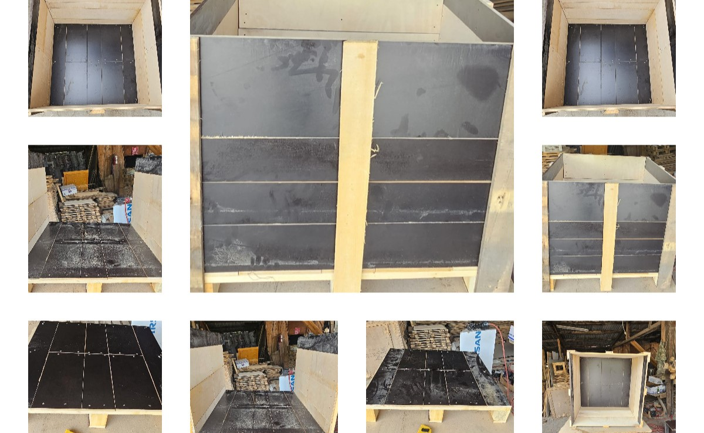
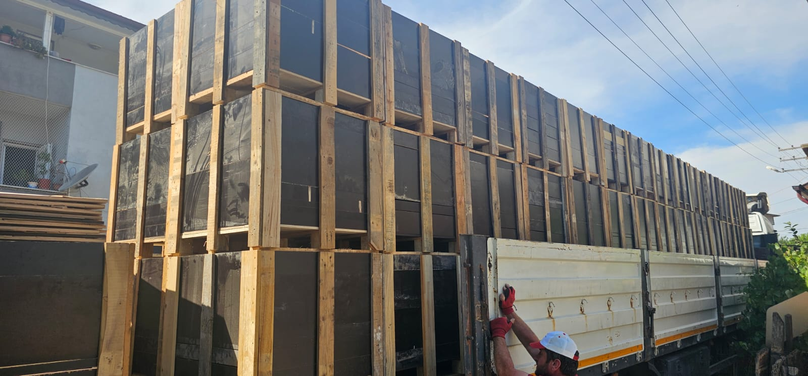
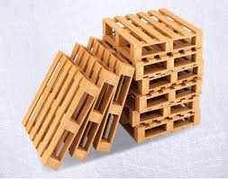
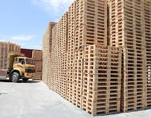
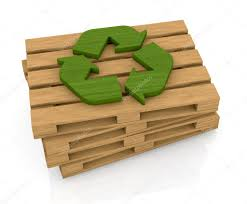

Depolama ve Taşıma Sandığı Çözümlerinde Öncü

Dayanıklı, yüksek kaliteli palet sandık, ahşap taşıma kasaları ve özel üretim depolama çözümleri.
Sandık Modellerimizi KeşfedinYusuf Yeşildal Ambalaj Kimdir?
2000 yılından bu yana sektördeki tecrübemizle, önceliğimizi depolama ve taşıma güvenliğini sağlayan palet sandık üretimine verdik. İşletmelerin lojistik ihtiyaçlarına yönelik ahşap sandık, pleymut sandık ve palet tedariği ile kalite standartlarına uygun, maliyet dostu çözümler üretiyoruz.
Daha Fazla Bilgi EdininÖne Çıkan Hizmetlerimiz

Palet Sandık İmalatı
Ağır yük taşımacılığına ve uzun süreli depolamaya uygun, yüksek mukavemetli ahşap ve pleymut sandık üretimimiz ile güvenli lojistik sağlıyoruz.

Özel Üretim Ahşap Paletler
İhtiyaçlarınıza tam uyumlu, özel boyut ve özelliklerde palet üretimi ile operasyonel verimliliğinizi artırın.

Standart Palet Tedariği
Dayanıklı ve tekrar tekrar kullanıma uygun, uluslararası standartlara riayet eden yeni nesil ahşap palet çözümleri sunuyoruz.

Geri Dönüşüm & Onarım
Eskimiş, hasar görmüş palet ve sandıklarınızı alıp, onarım ve yenilemesini sağlayarak doğaya ve bütçenize katkı sunuyoruz.
Neden Bizi Tercih Etmelisiniz?
Özel Sandık Çözümleri
Ürünlerinizin ebatlarına ve taşıma hassasiyetine göre özel sandık tasarımı ve üretimi yapıyoruz.
Zamanında Teslimat
Teslimat süreçlerimizde hız ve güvenilirliği ön planda tutarak lojistik süreçlerinizi aksatmıyoruz.
Üstün Kalite Malzeme
İster standart palet ister büyük taşıma sandıkları olsun, her zaman en kaliteli ahşabı kullanıyoruz.
Sürdürülebilirlik
Palet ve sandık geri kazanımıyla daha az atık üretiyor, doğaya saygılı bir üretim politikası izliyoruz.
Sıkça Sorulan Sorular
Palet sandık ile standart palet arasındaki fark nedir?
Standart paletler sadece ürünlerin alt kısmında destek sağlarken, palet sandık (veya ahşap taşıma sandığı) ürünün dört etrafını kapatarak tam koruma sağlar. Özellikle kırılgan, değerli veya ağır sanayi ürünlerinin ihracatında palet sandık kullanımı zorunludur.
Pleymut sandık üretiminiz var mı?
Evet, neme ve suya karşı yüksek dayanıklılık gösteren, hafif ama bir o kadar da sağlam olan pleymut sandık imalatımız mevcuttur. Taşıma maliyetlerini düşürmek isteyen firmalar için pleymut taşıma sandığı ideal bir çözümdür.
İhracat sandıklarında ISPM-15 standardı uyguluyor musunuz?
Kesinlikle. Yurtdışı sevkiyatlarında zorunlu olan ısıl işlem (ISPM-15) standartlarına uygun ahşap depolama sandığı ve ihracat sandığı üretiyoruz. Sandıklarımız gümrüklerde hiçbir sorun yaşamadan güvenle geçer.